uView Flutter 组件库使用说明
本文档由示例应用自动截图生成，截图来自 Android 模拟器（API 36）。 每个组件包含效果截图与用法示例；带“交互效果”的组件需点击后才会出现对应界面。
快速开始
在应用顶层用 UView 注入主题后即可使用全部组件：
import 'package:flutter/material.dart';
import 'package:uview_flutter/uview_flutter.dart';
void main() => runApp(const MyApp());
class MyApp extends StatelessWidget {
const MyApp({Key? key}) : super(key: key);
@override
Widget build(BuildContext context) {
return UView(
theme: const UViewThemeData(),
child: MaterialApp(home: const HomePage()),
);
}
}运行时可通过 UView.update(context, ...) 切换主题。
组件总览
基础组件
- [Button 按钮](#button-按钮) — type / plain / round / loading / block / icon
- [Text 文本](#text-文本) — type 取主题色、bold、lines 截断
- [Tag 标签](#tag-标签) — type / plain / round / closable / 自定义色
- [Badge 徽标数](#badge-徽标数) — 数字 / 圆点 / 溢出 / 角标包裹
- [Cell 单元格](#cell-单元格) — title / value / label / isLink / required
- [Icon 图标](#icon-图标) — 按名称取图标，统一主题色
- [Image 图片](#image-图片) — circle / radius / 加载与失败占位
- [Loading 加载](#loading-加载) — 圆环 spinner，可换色换尺寸
- [Gap 间隔](#gap-间隔) — 布局中等距间隔
- [Layout 布局](#layout-布局) — URow / UCol，支持 gap
- [Divider 分割线](#divider-分割线) — 中间文字 / 虚线 / 对齐
表单组件
- [Form 表单](#form-表单) — UFormItem + 校验
- [Input 输入框](#input-输入框) — clearable / password / 前后缀
- [Textarea 文本域](#textarea-文本域) — 计数 / 多行
- [Search 搜索](#search-搜索) — 搜索图标 + 清空
- [VerificationCode 验证码](#verificationcode-验证码) — 输入框 + 倒计时
- [Checkbox 复选框](#checkbox-复选框) — 多选组
- [Radio 单选框](#radio-单选框) — 单选组
- [Switch 开关](#switch-开关) — 开关选择器
- [Select 选择器](#select-选择器) — 底部弹窗列表
- [NumberBox 步进器](#numberbox-步进器) — min/max/step
- [Slider 滑动](#slider-滑动) — 滑动选择器
- [Rate 评分](#rate-评分) — 星级评分
- [Picker 滚轮选择器](#picker-滚轮选择器) — 多列滚轮 / 字段触发
- [Calendar 日历](#calendar-日历) — 月历单日选择
- [Upload 上传](#upload-上传) — 上传格子（接 onAdd）
- [Keyboard 键盘](#keyboard-键盘) — 自定义数字键盘
反馈组件
- [Toast 轻提示](#toast-轻提示) — 全局 Overlay / loading
- [AlertTips 警告](#alerttips-警告) — 内嵌提示条
- [Modal 模态框](#modal-模态框) — 确认/取消对话框
- [Popup 弹出层](#popup-弹出层) — 多方向弹出
- [ActionSheet 操作菜单](#actionsheet-操作菜单) — 底部操作菜单
- [NoticeBar 通知](#noticebar-通知) — 滚动通知条
- [Collapse 折叠面板](#collapse-折叠面板) — 手风琴/多开
- [SwipeAction 滑动](#swipeaction-滑动) — 左滑操作按钮
导航组件
- [Navbar 导航栏](#navbar-导航栏) — 顶部标题/返回/操作
- [Tabbar 标签栏](#tabbar-标签栏) — 底部切换
- [Tabs 标签页](#tabs-标签页) — 顶部标签页
- [Steps 步骤条](#steps-步骤条) — 横向步骤
- [Dropdown 下拉菜单](#dropdown-下拉菜单) — 浮层选项
- [BackTop 返回顶部](#backtop-返回顶部) — 滚动吸顶按钮
布局组件
- [Grid 宫格](#grid-宫格) — 多列图标网格
- [Swiper 轮播](#swiper-轮播) — 自动轮播 + 指示点
- [Avatar 头像](#avatar-头像) — 圆形/方形
- [Empty 空状态](#empty-空状态) — 空数据占位
- [Skeleton 骨架屏](#skeleton-骨架屏) — 加载占位动画
- [Sticky 吸顶](#sticky-吸顶) — 滚动吸顶
- [Waterfall 瀑布流](#waterfall-瀑布流) — 多列不等高
数据/其他
- [Progress 进度条](#progress-进度条) — 百分比/主题色
- [CountDown 倒计时](#countdown-倒计时) — 天时分秒
- [CountTo 数字滚动](#countto-数字滚动) — 动画计数
- [Card 卡片](#card-卡片) — 标题/内容容器
- [LoadMore 加载更多](#loadmore-加载更多) — 加载状态
其他组件
- [FloatingBall 悬浮球](#floatingball-悬浮球) — 可拖拽 / 展开菜单
基础组件
Button 按钮
说明：type / plain / round / loading / block / icon
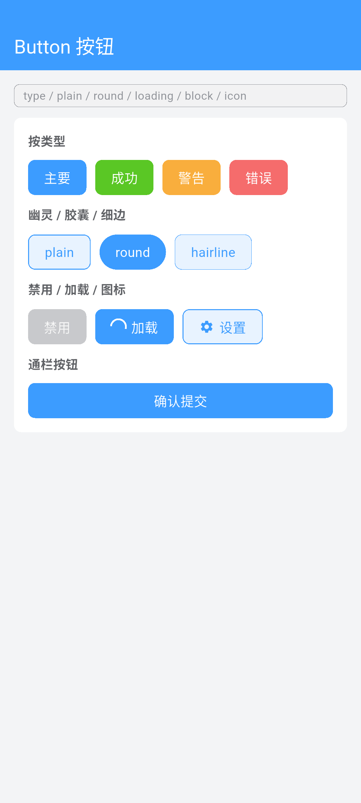
用法示例（点击展开）
class ButtonDemo extends StatelessWidget {
const ButtonDemo({Key? key}) : super(key: key);
@override
Widget build(BuildContext context) {
return UCol(
crossAxisAlignment: CrossAxisAlignment.start,
gap: 12,
children: [
const UText('按类型', bold: true),
URow(
gap: 10,
children: const [
UButton(text: '主要', type: UViewType.primary),
UButton(text: '成功', type: UViewType.success),
UButton(text: '警告', type: UViewType.warning),
UButton(text: '错误', type: UViewType.error),
],
),
const UText('幽灵 / 胶囊 / 细边', bold: true),
URow(
gap: 10,
children: const [
UButton(text: 'plain', plain: true),
UButton(text: 'round', round: true),
UButton(text: 'hairline', plain: true, hairline: true),
],
),
const UText('禁用 / 加载 / 图标', bold: true),
URow(
gap: 10,
children: const [
UButton(text: '禁用', disabled: true),
UButton(text: '加载', loading: true),
UButton(text: '设置', icon: Icons.settings, plain: true),
],
),
const UText('通栏按钮', bold: true),
const UButton(text: '确认提交', block: true, onPressed: null),
],
);
}
}Text 文本
说明：type 取主题色、bold、lines 截断
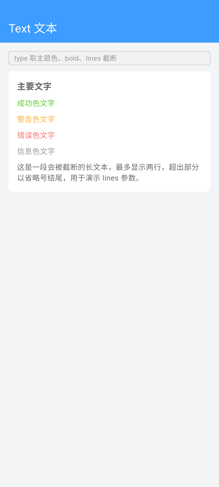
用法示例（点击展开）
class TextDemo extends StatelessWidget {
const TextDemo({Key? key}) : super(key: key);
@override
Widget build(BuildContext context) {
return UCol(
crossAxisAlignment: CrossAxisAlignment.start,
gap: 10,
children: const [
UText('主要文字', type: UViewType.def, bold: true, size: 16),
UText('成功色文字', type: UViewType.success),
UText('警告色文字', type: UViewType.warning),
UText('错误色文字', type: UViewType.error),
UText('信息色文字', type: UViewType.info),
UText(
'这是一段会被截断的长文本，最多显示两行，超出部分以省略号结尾，用于演示 lines 参数。',
lines: 2,
),
],
);
}
}Tag 标签
说明：type / plain / round / closable / 自定义色
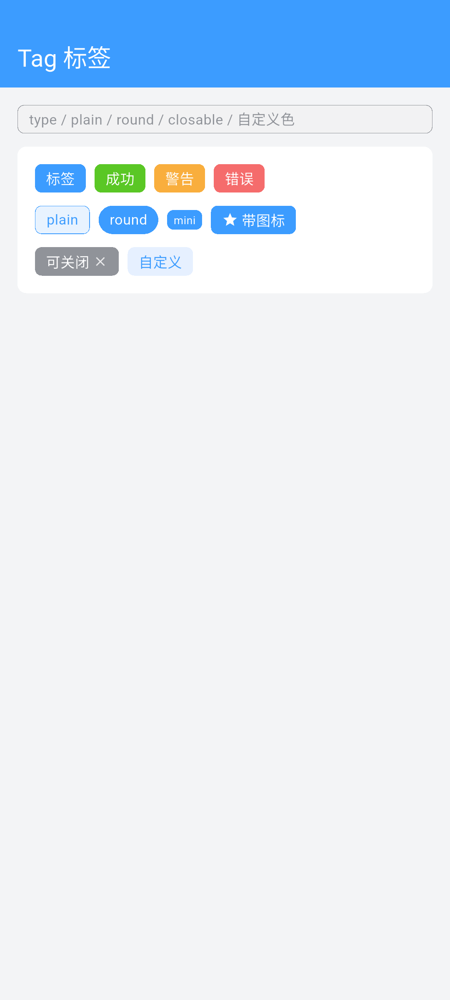
用法示例（点击展开）
class TagDemo extends StatelessWidget {
const TagDemo({Key? key}) : super(key: key);
@override
Widget build(BuildContext context) {
return UCol(
crossAxisAlignment: CrossAxisAlignment.start,
gap: 12,
children: [
URow(
gap: 8,
children: const [
UTag(text: '标签', type: UViewType.primary),
UTag(text: '成功', type: UViewType.success),
UTag(text: '警告', type: UViewType.warning),
UTag(text: '错误', type: UViewType.error),
],
),
URow(
gap: 8,
children: const [
UTag(text: 'plain', plain: true),
UTag(text: 'round', round: true),
UTag(text: 'mini', size: UViewSize.mini),
UTag(text: '带图标', icon: Icons.star, type: UViewType.primary),
],
),
URow(
gap: 8,
children: const [
UTag(text: '可关闭', closable: true, type: UViewType.info),
UTag(text: '自定义', bgColor: Color(0xFFE6F0FF), textColor: Color(0xFF3C9CFF)),
],
),
],
);
}
}Badge 徽标数
说明：数字 / 圆点 / 溢出 / 角标包裹
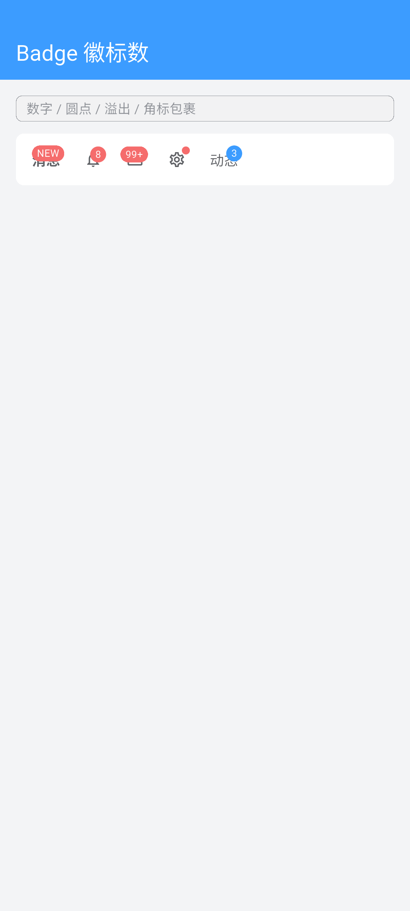
用法示例（点击展开）
class BadgeDemo extends StatelessWidget {
const BadgeDemo({Key? key}) : super(key: key);
@override
Widget build(BuildContext context) {
return URow(
gap: 24,
children: [
const UBadge(text: 'NEW', child: UText('消息', bold: true)),
const UBadge(count: 8, child: UIcon(name: 'bell')),
const UBadge(count: 199, child: UIcon(name: 'email')),
const UBadge(isDot: true, child: UIcon(name: 'setting')),
const UBadge(count: 3, type: UViewType.primary, child: UText('动态')),
],
);
}
}Cell 单元格
说明：title / value / label / isLink / required
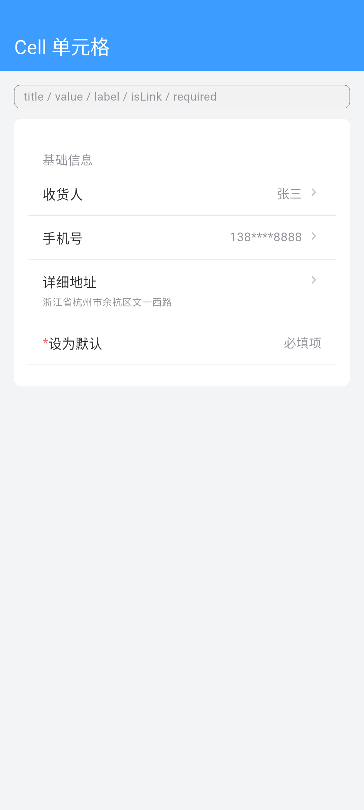
用法示例（点击展开）
class CellDemo extends StatelessWidget {
const CellDemo({Key? key}) : super(key: key);
@override
Widget build(BuildContext context) {
return UCellGroup(
title: '基础信息',
children: [
const UCell(title: '收货人', value: '张三', isLink: true),
const UCell(title: '手机号', value: '138****8888', isLink: true),
const UCell(title: '详细地址', label: '浙江省杭州市余杭区文一西路', isLink: true),
const UCell(title: '设为默认', required: true, value: '必填项'),
],
);
}
}Icon 图标
说明：按名称取图标，统一主题色
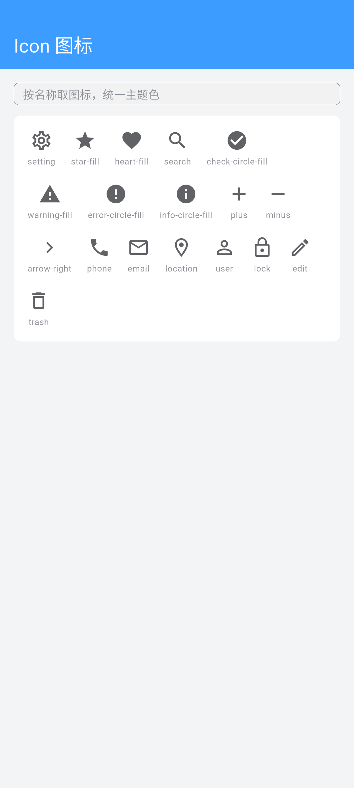
用法示例（点击展开）
class IconDemo extends StatelessWidget {
const IconDemo({Key? key}) : super(key: key);
static const names = [
'setting', 'star-fill', 'heart-fill', 'search', 'check-circle-fill',
'warning-fill', 'error-circle-fill', 'info-circle-fill', 'plus', 'minus',
'arrow-right', 'phone', 'email', 'location', 'user', 'lock', 'edit', 'trash',
];
@override
Widget build(BuildContext context) {
return Wrap(
spacing: 18,
runSpacing: 18,
children: names
.map((n) => Column(
mainAxisSize: MainAxisSize.min,
children: [
UIcon(name: n, size: 26),
const SizedBox(height: 4),
UText(n, size: 10, type: UViewType.info),
],
))
.toList(),
);
}
}Image 图片
说明：circle / radius / 加载与失败占位
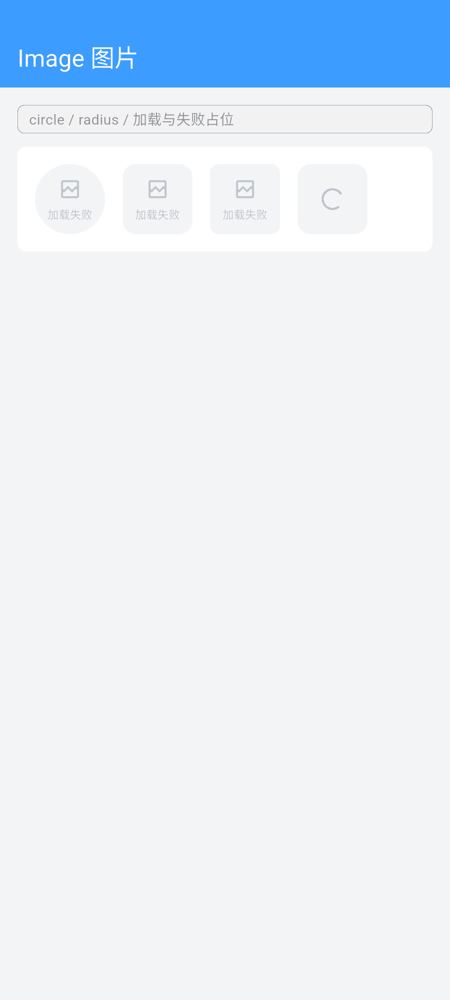
用法示例（点击展开）
class ImageDemo extends StatelessWidget {
const ImageDemo({Key? key}) : super(key: key);
@override
Widget build(BuildContext context) {
const url = 'https://uviewpro.cn/logo.png';
return URow(
gap: 16,
children: [
const UImage(src: url, width: 64, height: 64, shape: UViewShape.circle),
const UImage(src: url, width: 64, height: 64, radius: 12),
const UImage(src: url, width: 64, height: 64),
const UImage(src: null, width: 64, height: 64, radius: 12),
],
);
}
}Loading 加载
说明：圆环 spinner，可换色换尺寸
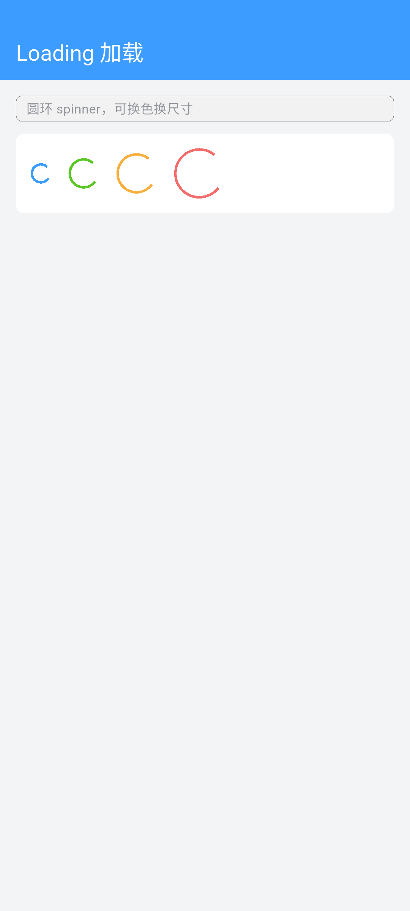
用法示例（点击展开）
class LoadingDemo extends StatelessWidget {
const LoadingDemo({Key? key}) : super(key: key);
@override
Widget build(BuildContext context) {
return URow(
gap: 20,
children: const [
ULoading(size: 18),
ULoading(size: 28, type: UViewType.success),
ULoading(size: 38, type: UViewType.warning),
ULoading(size: 48, type: UViewType.error),
ULoading(show: false),
],
);
}
}Gap 间隔
说明：布局中等距间隔
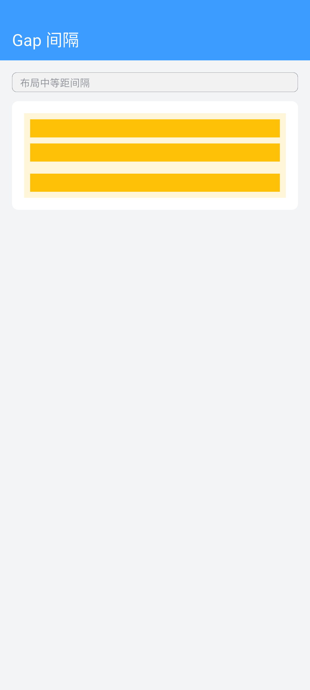
用法示例（点击展开）
class GapDemo extends StatelessWidget {
const GapDemo({Key? key}) : super(key: key);
@override
Widget build(BuildContext context) {
return Container(
color: Colors.amber.withOpacity(0.15),
padding: const EdgeInsets.all(8),
child: UCol(
gap: 0,
children: [
Container(height: 24, color: Colors.amber),
const UGap(height: 8),
Container(height: 24, color: Colors.amber),
const UGap(height: 16),
Container(height: 24, color: Colors.amber),
],
),
);
}
}Layout 布局
说明：URow / UCol，支持 gap
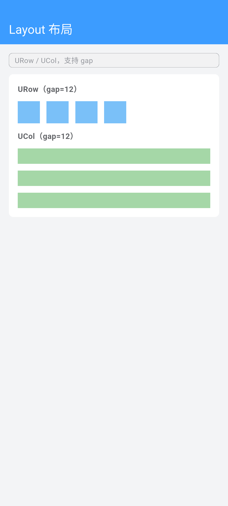
用法示例（点击展开）
class LayoutDemo extends StatelessWidget {
const LayoutDemo({Key? key}) : super(key: key);
@override
Widget build(BuildContext context) {
return UCol(
crossAxisAlignment: CrossAxisAlignment.start,
gap: 12,
children: [
const UText('URow（gap=12）', bold: true),
URow(
gap: 12,
children: List.generate(
4, (i) => Container(width: 40, height: 40, color: Colors.blue.withOpacity(0.6))),
),
const UText('UCol（gap=12）', bold: true),
UCol(
gap: 12,
children: List.generate(
3, (i) => Container(height: 28, color: Colors.green.withOpacity(0.5))),
),
],
);
}
}Divider 分割线
说明：中间文字 / 虚线 / 对齐
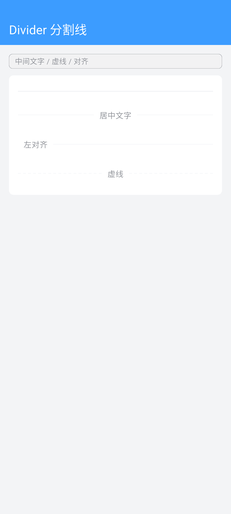
用法示例（点击展开）
class DividerDemo extends StatelessWidget {
const DividerDemo({Key? key}) : super(key: key);
@override
Widget build(BuildContext context) {
return const UCol(
crossAxisAlignment: CrossAxisAlignment.start,
gap: 8,
children: [
UDivider(),
UDivider(text: '居中文字'),
UDivider(text: '左对齐', textAlign: MainAxisAlignment.start),
UDivider(text: '虚线', dashed: true),
],
);
}
}表单组件
Form 表单
说明：UFormItem + 校验
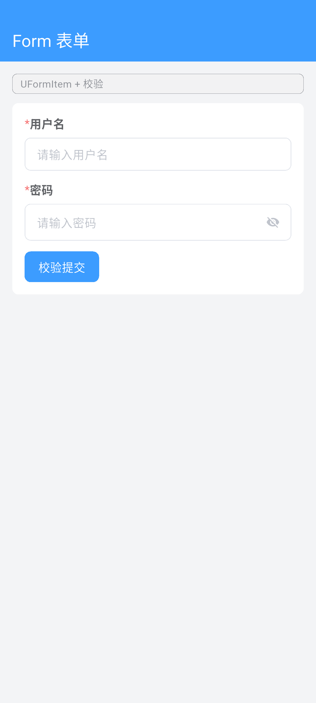
交互效果：
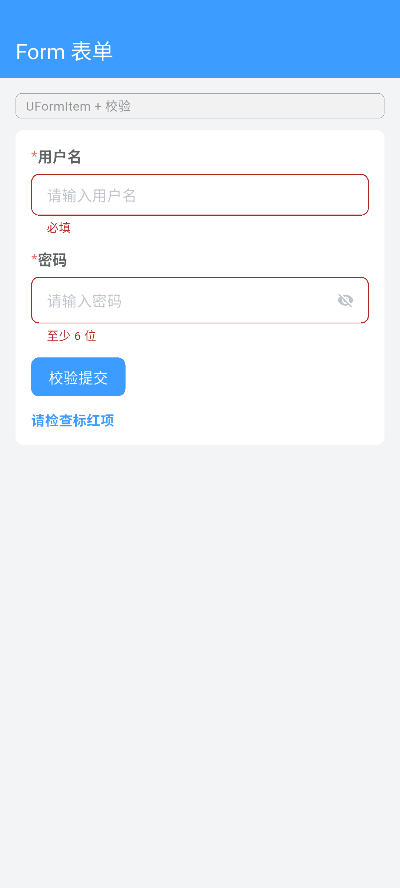
用法示例（点击展开）
class FormDemo extends StatefulWidget {
const FormDemo({Key? key}) : super(key: key);
@override
_FormDemoState createState() => _FormDemoState();
}
class _FormDemoState extends State<FormDemo> {
final UFormController _ctrl = UFormController();
String? _msg;
@override
Widget build(BuildContext context) {
return UCol(
gap: 14,
crossAxisAlignment: CrossAxisAlignment.start,
children: [
UForm(
controller: _ctrl,
child: UCol(
gap: 14,
crossAxisAlignment: CrossAxisAlignment.start,
children: [
UFormItem(
label: '用户名',
required: true,
child: UInput(
placeholder: '请输入用户名',
validator: (v) => (v == null || v.isEmpty) ? '必填' : null,
),
),
UFormItem(
label: '密码',
required: true,
child: UInput(
password: true,
clearable: true,
placeholder: '请输入密码',
validator: (v) => (v != null && v.length < 6) ? '至少 6 位' : null,
),
),
],
),
),
UButton(
text: '校验提交',
onPressed: () {
final ok = _ctrl.validate();
setState(() => _msg = ok ? '校验通过' : '请检查标红项');
},
),
if (_msg != null) UText(_msg!, type: UViewType.primary, bold: true),
],
);
}
}Input 输入框
说明：clearable / password / 前后缀
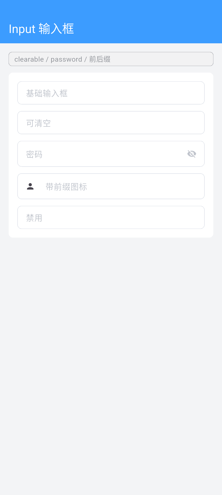
用法示例（点击展开）
class InputDemo extends StatelessWidget {
const InputDemo({Key? key}) : super(key: key);
@override
Widget build(BuildContext context) {
return const UCol(
gap: 12,
crossAxisAlignment: CrossAxisAlignment.start,
children: [
UInput(placeholder: '基础输入框'),
UInput(placeholder: '可清空', clearable: true),
UInput(placeholder: '密码', password: true, clearable: true),
UInput(placeholder: '带前缀图标', prefixIcon: Icon(Icons.person, size: 18)),
UInput(placeholder: '禁用', enabled: false),
],
);
}
}Textarea 文本域
说明：计数 / 多行
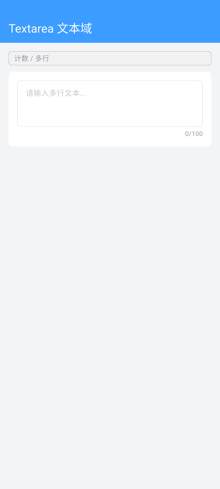
用法示例（点击展开）
class TextareaDemo extends StatelessWidget {
const TextareaDemo({Key? key}) : super(key: key);
@override
Widget build(BuildContext context) =>
const UTextarea(placeholder: '请输入多行文本...', maxLength: 100, showCounter: true, maxLines: 3);
}Search 搜索
说明：搜索图标 + 清空
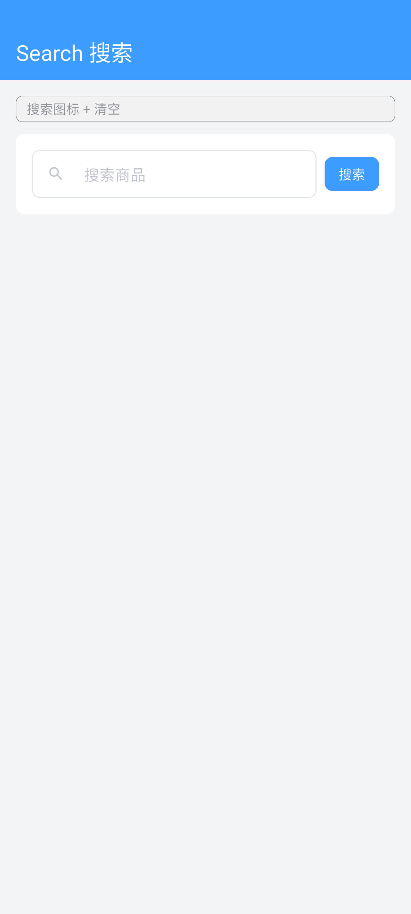
用法示例（点击展开）
class SearchDemo extends StatelessWidget {
const SearchDemo({Key? key}) : super(key: key);
@override
Widget build(BuildContext context) => const USearch(placeholder: '搜索商品');
}VerificationCode 验证码
说明：输入框 + 倒计时
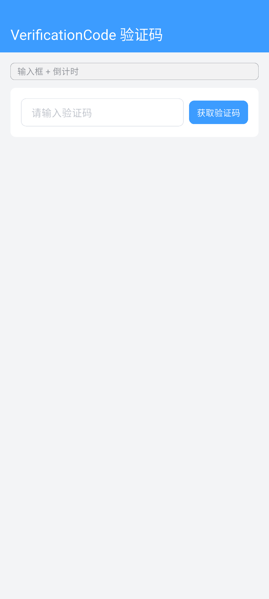
用法示例（点击展开）
class VerificationCodeDemo extends StatelessWidget {
const VerificationCodeDemo({Key? key}) : super(key: key);
@override
Widget build(BuildContext context) => const UVerificationCode();
}Checkbox 复选框
说明：多选组
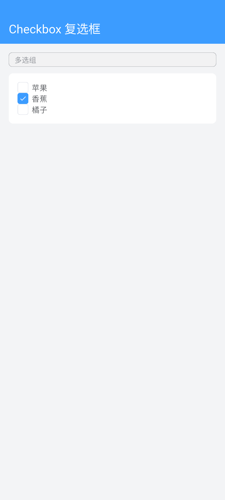
用法示例（点击展开）
class CheckboxDemo extends StatefulWidget {
const CheckboxDemo({Key? key}) : super(key: key);
@override
_CheckboxDemoState createState() => _CheckboxDemoState();
}
class _CheckboxDemoState extends State<CheckboxDemo> {
List<String> _v = ['b'];
@override
Widget build(BuildContext context) => UCheckboxGroup<String>(
value: _v,
onChanged: (v) => setState(() => _v = v),
options: const [
UCheckboxOption('苹果', 'a'),
UCheckboxOption('香蕉', 'b'),
UCheckboxOption('橘子', 'c'),
],
);
}Radio 单选框
说明：单选组
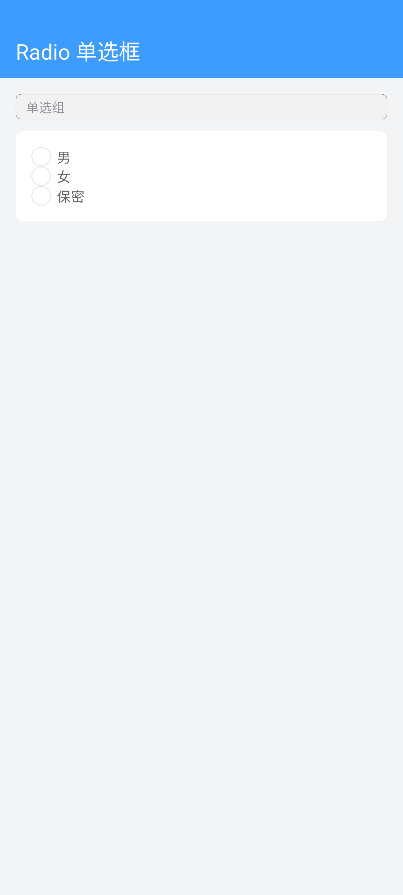
用法示例（点击展开）
class RadioDemo extends StatefulWidget {
const RadioDemo({Key? key}) : super(key: key);
@override
_RadioDemoState createState() => _RadioDemoState();
}
class _RadioDemoState extends State<RadioDemo> {
String? _v = 'b';
@override
Widget build(BuildContext context) => URadioGroup<String>(
value: _v,
onChanged: (v) => setState(() => _v = v),
options: const [
URadioOption('男', 'male'),
URadioOption('女', 'female'),
URadioOption('保密', 'secret'),
],
);
}Switch 开关
说明：开关选择器
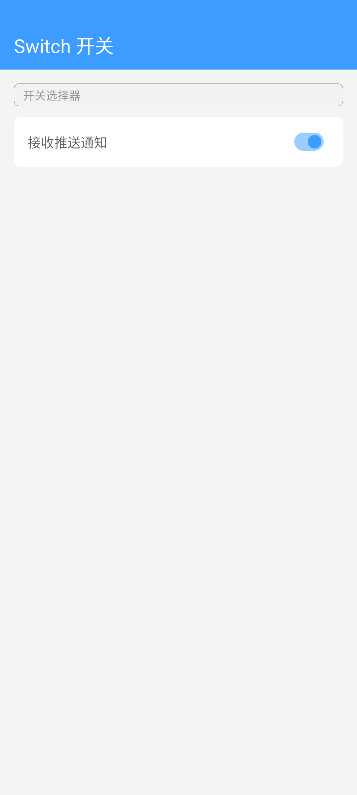
用法示例（点击展开）
class SwitchDemo extends StatefulWidget {
const SwitchDemo({Key? key}) : super(key: key);
@override
_SwitchDemoState createState() => _SwitchDemoState();
}
class _SwitchDemoState extends State<SwitchDemo> {
bool _v = true;
@override
Widget build(BuildContext context) => URow(
children: [
const UText('接收推送通知', size: 15),
const Spacer(),
USwitch(value: _v, onChanged: (b) => setState(() => _v = b)),
],
);
}Select 选择器
说明：底部弹窗列表
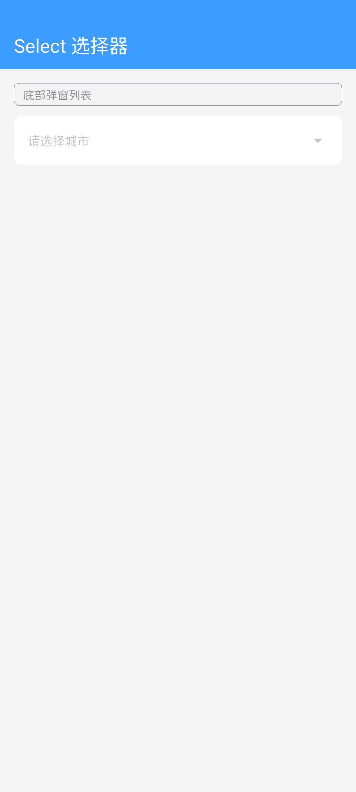
交互效果：
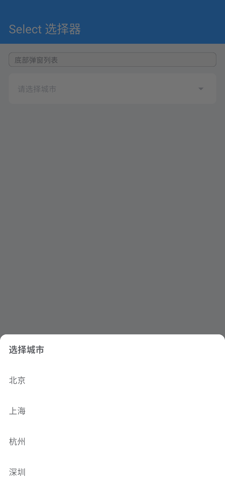
用法示例（点击展开）
class SelectDemo extends StatefulWidget {
const SelectDemo({Key? key}) : super(key: key);
@override
_SelectDemoState createState() => _SelectDemoState();
}
class _SelectDemoState extends State<SelectDemo> {
String? _v;
@override
Widget build(BuildContext context) => USelect<String>(
value: _v,
placeholder: '请选择城市',
title: '选择城市',
onChanged: (v) => setState(() => _v = v),
options: const [
USelectOption('北京', 'bj'),
USelectOption('上海', 'sh'),
USelectOption('杭州', 'hz'),
USelectOption('深圳', 'sz'),
],
);
}NumberBox 步进器
说明：min/max/step
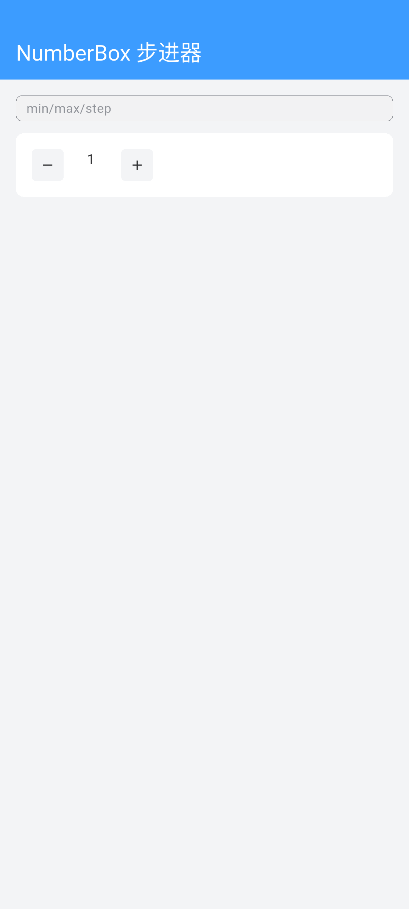
用法示例（点击展开）
class NumberBoxDemo extends StatefulWidget {
const NumberBoxDemo({Key? key}) : super(key: key);
@override
_NumberBoxDemoState createState() => _NumberBoxDemoState();
}
class _NumberBoxDemoState extends State<NumberBoxDemo> {
double _v = 1;
@override
Widget build(BuildContext context) => UNumberBox(
value: _v,
min: 0,
max: 10,
onChanged: (v) => setState(() => _v = v),
);
}Slider 滑动
说明：滑动选择器
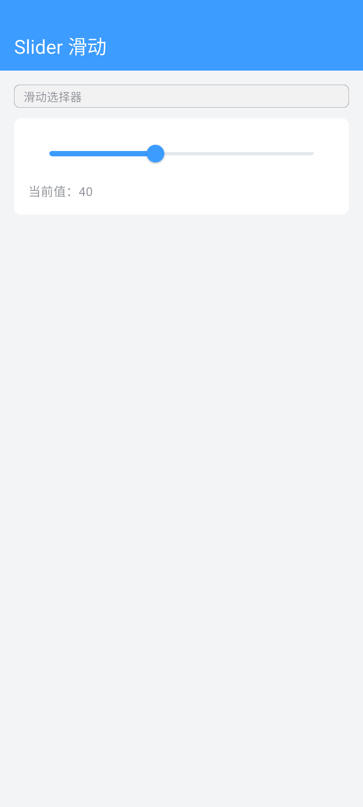
用法示例（点击展开）
class SliderDemo extends StatefulWidget {
const SliderDemo({Key? key}) : super(key: key);
@override
_SliderDemoState createState() => _SliderDemoState();
}
class _SliderDemoState extends State<SliderDemo> {
double _v = 40;
@override
Widget build(BuildContext context) => UCol(
gap: 8,
crossAxisAlignment: CrossAxisAlignment.start,
children: [
USlider(value: _v, divisions: 100, label: _v.round().toString(), onChanged: (v) => setState(() => _v = v)),
UText('当前值：${_v.round()}', type: UViewType.info),
],
);
}Rate 评分
说明：星级评分
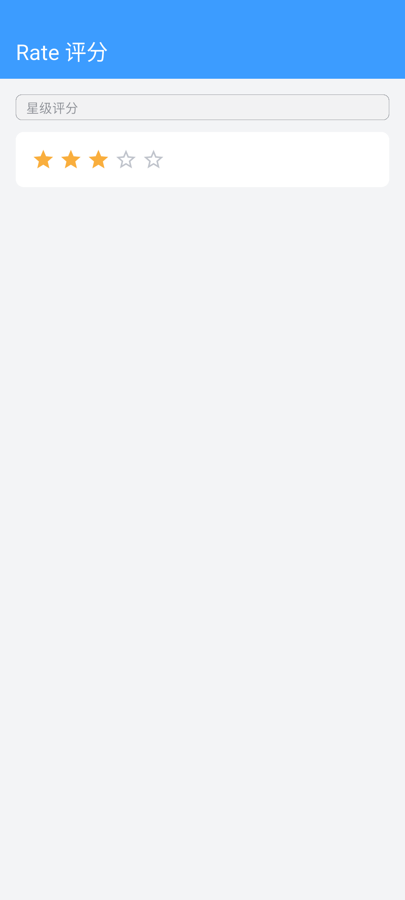
用法示例（点击展开）
class RateDemo extends StatefulWidget {
const RateDemo({Key? key}) : super(key: key);
@override
_RateDemoState createState() => _RateDemoState();
}
class _RateDemoState extends State<RateDemo> {
int _v = 3;
@override
Widget build(BuildContext context) => URate(value: _v, onChanged: (v) => setState(() => _v = v));
}Picker 滚轮选择器
说明：多列滚轮 / 字段触发
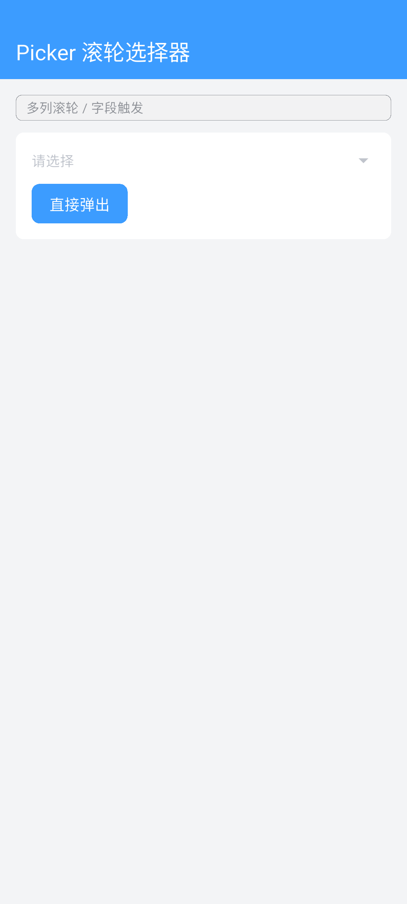
交互效果：
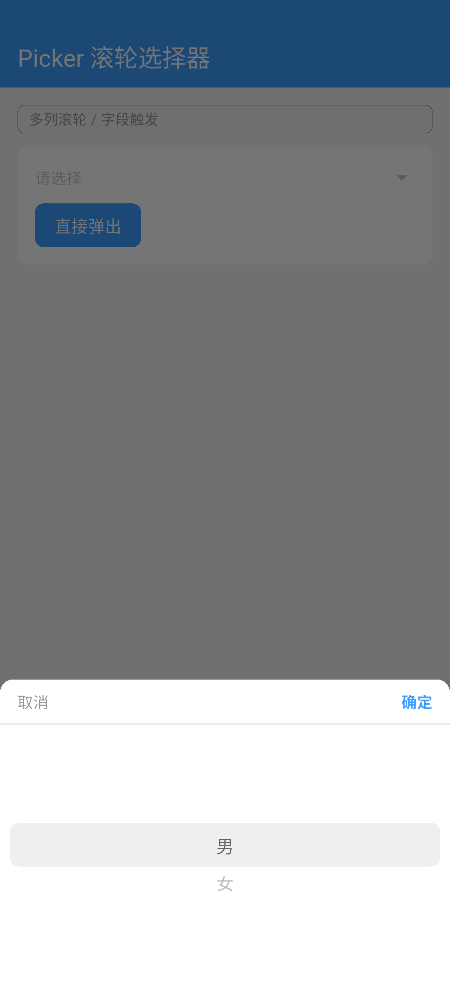
用法示例（点击展开）
class PickerDemo extends StatefulWidget {
const PickerDemo({Key? key}) : super(key: key);
@override
_PickerDemoState createState() => _PickerDemoState();
}
class _PickerDemoState extends State<PickerDemo> {
List<int>? _idx;
void _open() {
UPicker.show(
context,
columns: const [
['男', '女'],
],
).then((r) {
if (r != null) UToast.show(context, '选择索引: $r');
});
}
@override
Widget build(BuildContext context) => UCol(
gap: 12,
crossAxisAlignment: CrossAxisAlignment.start,
children: [
UPickerField(
columns: const [
['周一', '周二', '周三', '周四', '周五', '周六', '周日'],
['上午', '下午', '晚上'],
],
valueIndexes: _idx,
title: '选择时间',
onChanged: (v) => setState(() => _idx = v),
),
UButton(text: '直接弹出', onPressed: _open),
],
);
}Calendar 日历
说明：月历单日选择
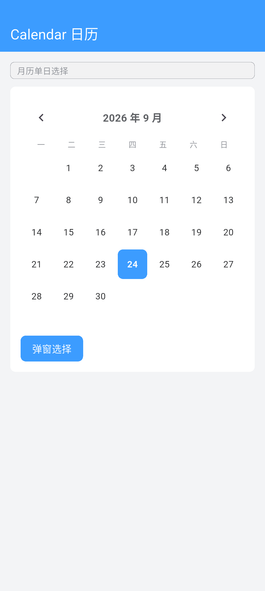
交互效果：
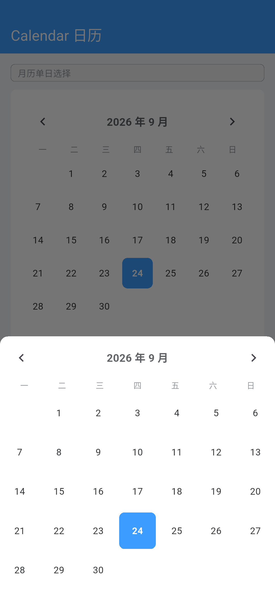
用法示例（点击展开）
class CalendarDemo extends StatefulWidget {
const CalendarDemo({Key? key}) : super(key: key);
@override
_CalendarDemoState createState() => _CalendarDemoState();
}
class _CalendarDemoState extends State<CalendarDemo> {
DateTime? _v = DateTime.now();
void _open() {
UCalendar.show(context, value: _v).then((r) {
if (r != null) setState(() => _v = r);
});
}
@override
Widget build(BuildContext context) => UCol(
gap: 12,
crossAxisAlignment: CrossAxisAlignment.start,
children: [
UCalendar(value: _v, onChanged: (d) => setState(() => _v = d), type: UViewType.primary),
UButton(text: '弹窗选择', onPressed: _open),
],
);
}Upload 上传
说明：上传格子（接 onAdd）
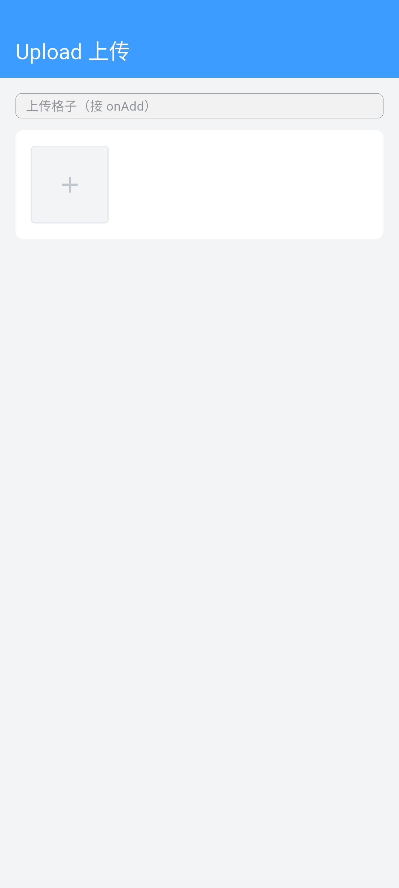
交互效果：
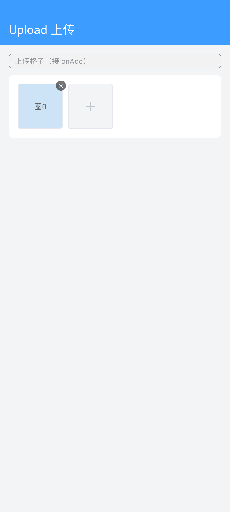
用法示例（点击展开）
class UploadDemo extends StatefulWidget {
const UploadDemo({Key? key}) : super(key: key);
@override
_UploadDemoState createState() => _UploadDemoState();
}
class _UploadDemoState extends State<UploadDemo> {
List<UUploadItem> _files = [];
void _add() {
final i = _files.length;
setState(() => _files.add(UUploadItem(
thumb: Container(
color: Colors.blue.withOpacity(0.18),
child: Center(child: UText('图$i')),
),
value: i,
)));
}
void _remove(int i) => setState(() => _files.removeAt(i));
@override
Widget build(BuildContext context) =>
UUpload(files: _files, onAdd: _add, onRemove: _remove, maxCount: 6);
}Keyboard 键盘
说明：自定义数字键盘
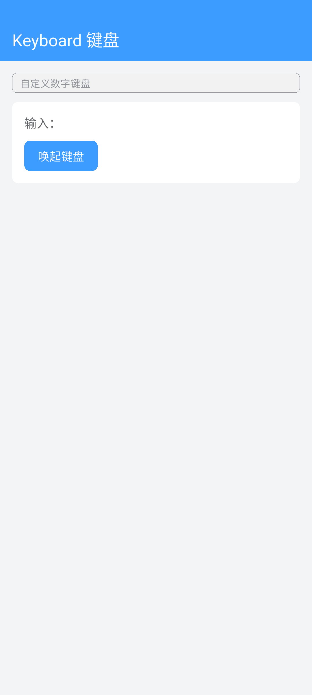
交互效果：
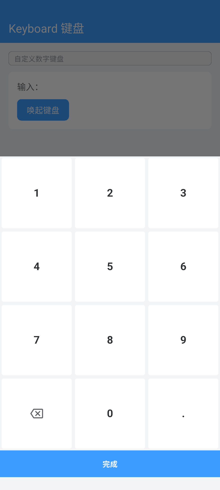
用法示例（点击展开）
class KeyboardDemo extends StatefulWidget {
const KeyboardDemo({Key? key}) : super(key: key);
@override
_KeyboardDemoState createState() => _KeyboardDemoState();
}
class _KeyboardDemoState extends State<KeyboardDemo> {
String _text = '';
void _open() {
UKeyboard.show(
context,
onKey: (k) => setState(() => _text += k),
onDelete: () => setState(
() => _text = _text.isNotEmpty ? _text.substring(0, _text.length - 1) : ''),
onConfirm: () => UToast.show(context, '完成：$_text'),
);
}
@override
Widget build(BuildContext context) => UCol(
gap: 12,
crossAxisAlignment: CrossAxisAlignment.start,
children: [
UText('输入：$_text', size: 16),
UButton(text: '唤起键盘', onPressed: _open),
],
);
}反馈组件
Toast 轻提示
说明：全局 Overlay / loading
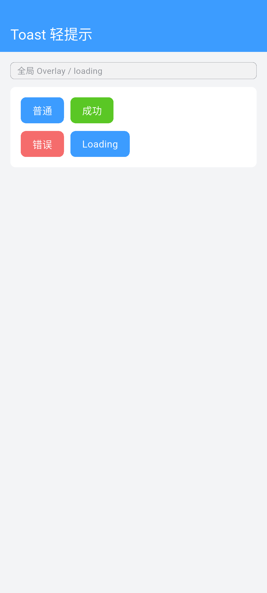
交互效果：
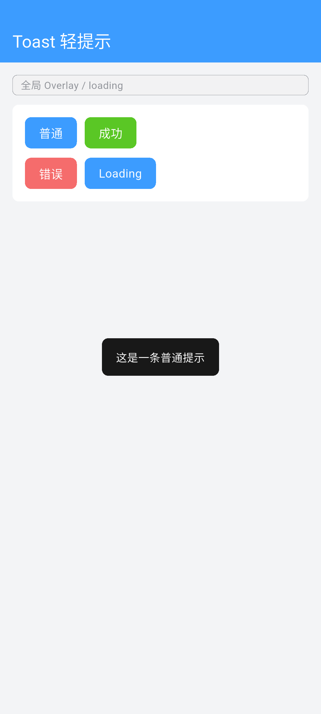
用法示例（点击展开）
class ToastDemo extends StatelessWidget {
const ToastDemo({Key? key}) : super(key: key);
@override
Widget build(BuildContext context) => UCol(
gap: 12,
crossAxisAlignment: CrossAxisAlignment.start,
children: [
URow(
gap: 10,
children: [
UButton(text: '普通', onPressed: () => UToast.show(context, '这是一条普通提示')),
UButton(text: '成功', type: UViewType.success, onPressed: () => UToast.success(context, '操作成功')),
],
),
URow(
gap: 10,
children: [
UButton(text: '错误', type: UViewType.error, onPressed: () => UToast.error(context, '操作失败')),
UButton(text: 'Loading', onPressed: () {
UToast.loading(context, message: '加载中');
Future.delayed(const Duration(seconds: 2), () => UToast.hide(context));
}),
],
),
],
);
}AlertTips 警告
说明：内嵌提示条
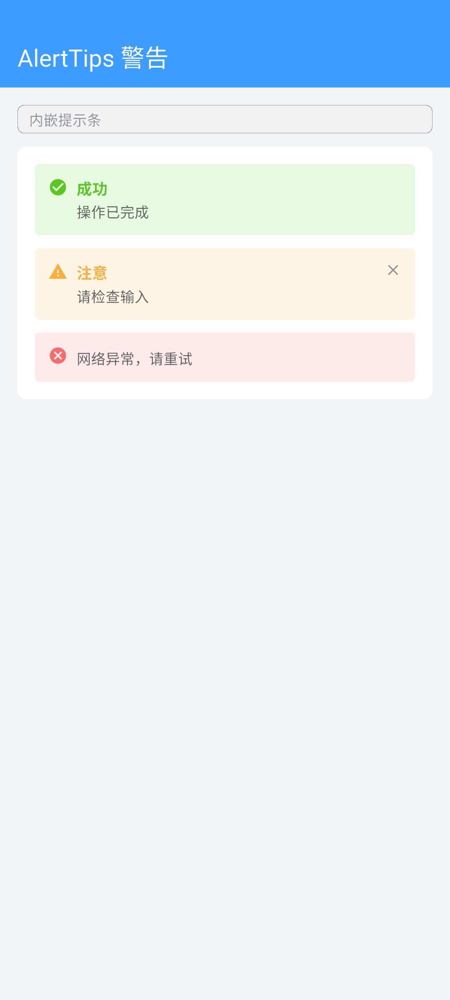
用法示例（点击展开）
class AlertTipsDemo extends StatelessWidget {
const AlertTipsDemo({Key? key}) : super(key: key);
@override
Widget build(BuildContext context) => UCol(
gap: 12,
crossAxisAlignment: CrossAxisAlignment.start,
children: const [
UAlertTips(type: UViewType.success, title: '成功', description: '操作已完成'),
UAlertTips(type: UViewType.warning, title: '注意', description: '请检查输入', showClose: true),
UAlertTips(type: UViewType.error, description: '网络异常，请重试'),
],
);
}Modal 模态框
说明：确认/取消对话框
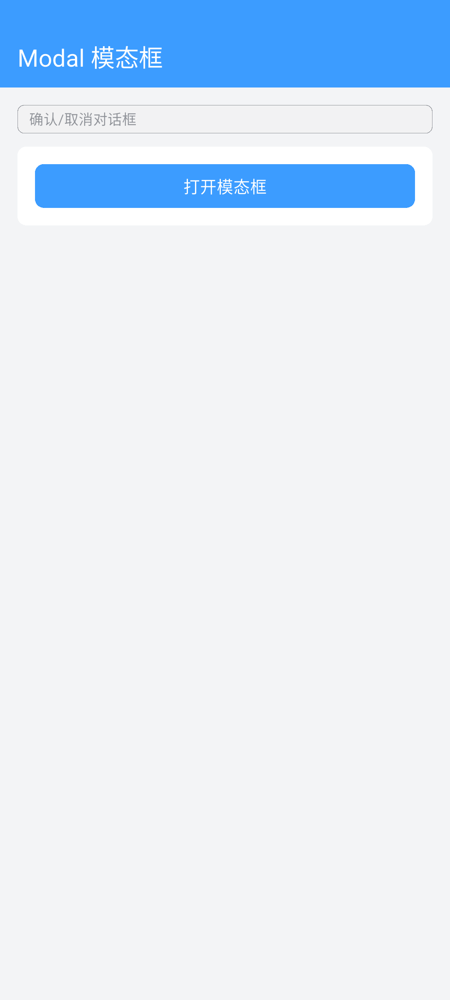
交互效果：
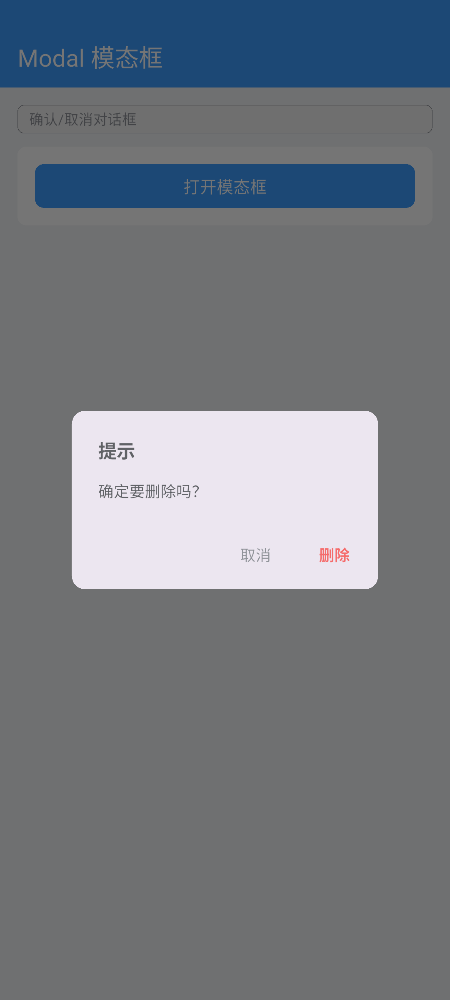
用法示例（点击展开）
class ModalDemo extends StatelessWidget {
const ModalDemo({Key? key}) : super(key: key);
@override
Widget build(BuildContext context) => UButton(
text: '打开模态框',
onPressed: () {
UModal.show(
context,
title: '提示',
content: '确定要删除吗？',
confirmText: '删除',
type: UViewType.error,
).then((r) {
if (r.confirmed) UToast.show(context, '已删除');
});
},
);
}Popup 弹出层
说明：多方向弹出
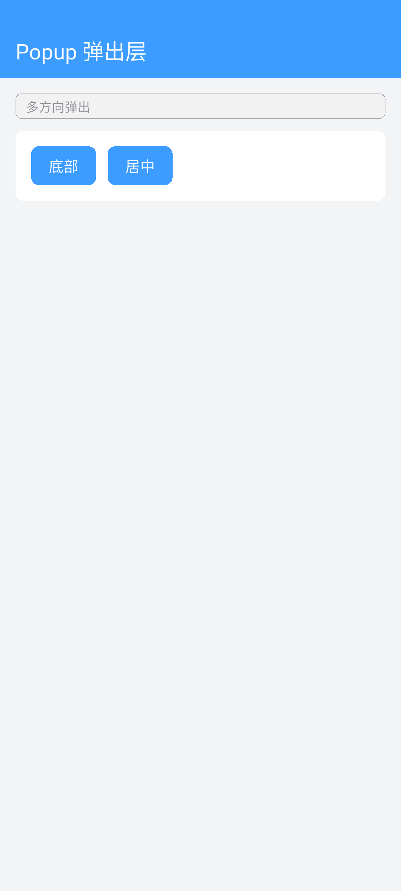
交互效果：
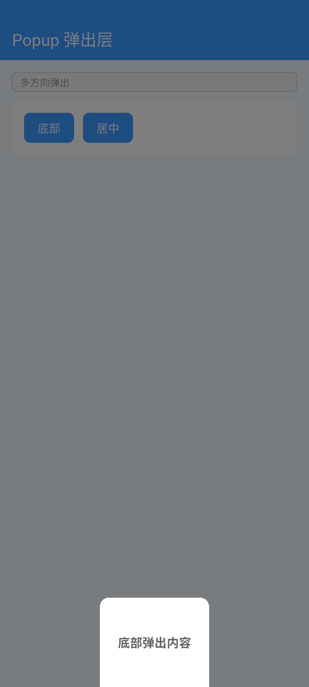
用法示例（点击展开）
class PopupDemo extends StatelessWidget {
const PopupDemo({Key? key}) : super(key: key);
static Widget _panel(String t) =>
Container(padding: const EdgeInsets.all(24), child: UText(t, bold: true, size: 16));
@override
Widget build(BuildContext context) => URow(
gap: 12,
children: [
UButton(text: '底部', onPressed: () => UPopup.show(
context,
position: UPopupPosition.bottom,
child: _panel('底部弹出内容'),
)),
UButton(text: '居中', onPressed: () => UPopup.show(
context,
position: UPopupPosition.center,
child: _panel('居中弹出内容'),
)),
],
);
}ActionSheet 操作菜单
说明：底部操作菜单
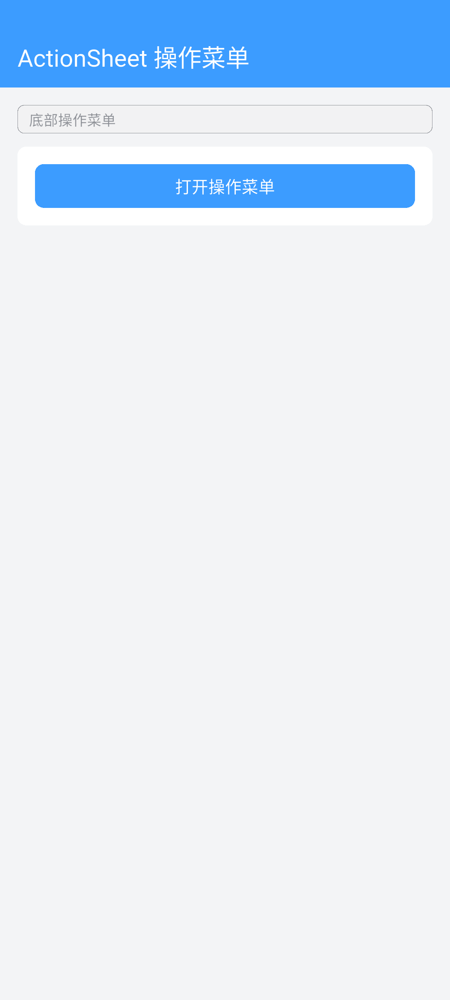
交互效果：
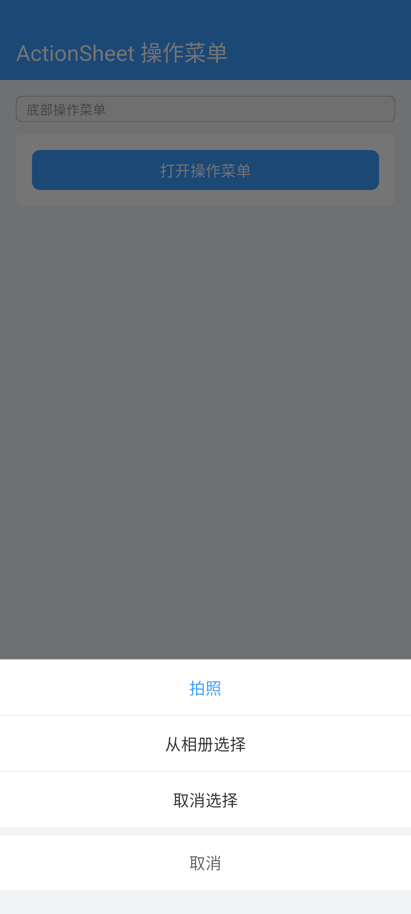
用法示例（点击展开）
class ActionSheetDemo extends StatelessWidget {
const ActionSheetDemo({Key? key}) : super(key: key);
static const _opts = ['拍照', '从相册选择', '取消选择'];
@override
Widget build(BuildContext context) => UButton(
text: '打开操作菜单',
onPressed: () {
UActionSheet.show(context, actions: _opts).then((i) {
if (i != null) UToast.show(context, '选中：${_opts[i]}');
});
},
);
}NoticeBar 通知
说明：滚动通知条
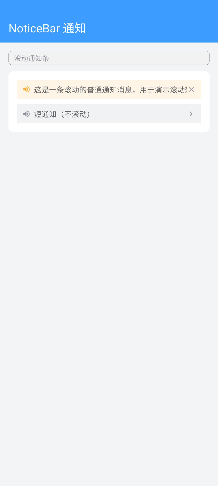
用法示例（点击展开）
class NoticeBarDemo extends StatelessWidget {
const NoticeBarDemo({Key? key}) : super(key: key);
@override
Widget build(BuildContext context) => UCol(
gap: 10,
crossAxisAlignment: CrossAxisAlignment.start,
children: [
UNoticeBar(text: '这是一条滚动的普通通知消息，用于演示滚动效果，足够长才会滚动。', mode: UNoticeBarMode.closeable),
UNoticeBar(text: '短通知（不滚动）', type: UViewType.info, mode: UNoticeBarMode.link, scrollable: false, onTap: () {}),
],
);
}Collapse 折叠面板
说明：手风琴/多开
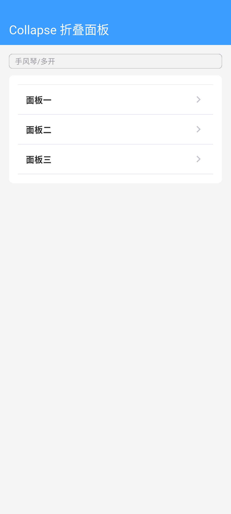
交互效果：
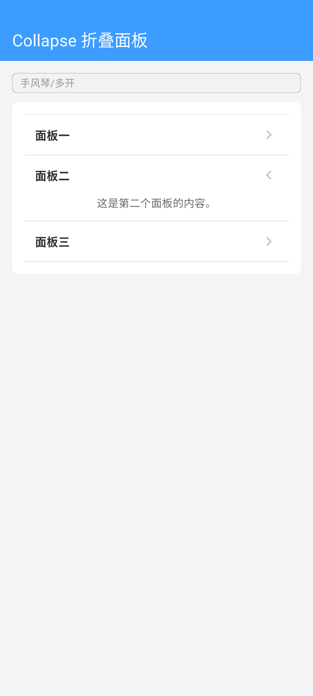
用法示例（点击展开）
class CollapseDemo extends StatelessWidget {
const CollapseDemo({Key? key}) : super(key: key);
@override
Widget build(BuildContext context) => UCollapse(
accordion: true,
children: const [
UCollapseItem(title: '面板一', content: UText('这是第一个面板的内容。')),
UCollapseItem(title: '面板二', content: UText('这是第二个面板的内容。')),
UCollapseItem(title: '面板三', content: UText('这是第三个面板的内容。')),
],
);
}SwipeAction 滑动
说明：左滑操作按钮

交互效果：
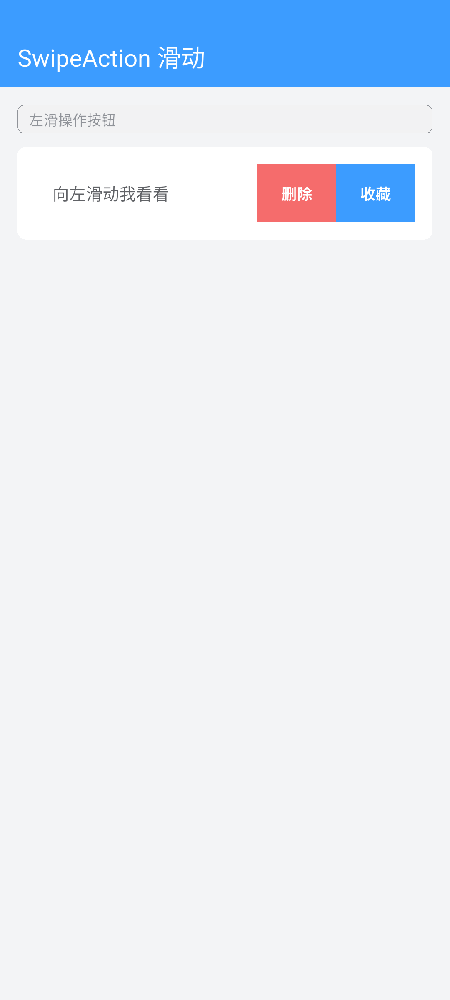
用法示例（点击展开）
class SwipeActionDemo extends StatelessWidget {
const SwipeActionDemo({Key? key}) : super(key: key);
@override
Widget build(BuildContext context) => USwipeActionCell(
actions: [
USwipeAction(text: '删除', type: UViewType.error, onTap: () => UToast.show(context, '删除')),
USwipeAction(text: '收藏', type: UViewType.primary, onTap: () => UToast.show(context, '收藏')),
],
child: Container(
color: Colors.white,
padding: const EdgeInsets.all(16),
child: const UText('向左滑动我看看', size: 15),
),
);
}导航组件
Navbar 导航栏
说明：顶部标题/返回/操作
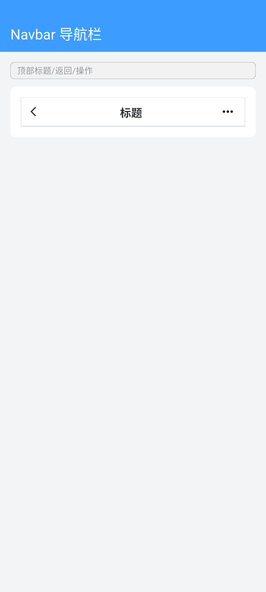
用法示例（点击展开）
class NavbarDemo extends StatelessWidget {
const NavbarDemo({Key? key}) : super(key: key);
@override
Widget build(BuildContext context) => Container(
decoration: BoxDecoration(
border: Border.all(color: UView.of(context).borderColor)),
child: UNavbar(
title: '标题',
showBack: true,
safeAreaTop: false,
onBack: () {},
actions: const [
Padding(
padding: EdgeInsets.all(8),
child: Icon(Icons.more_horiz),
),
],
),
);
}Tabbar 标签栏
说明：底部切换
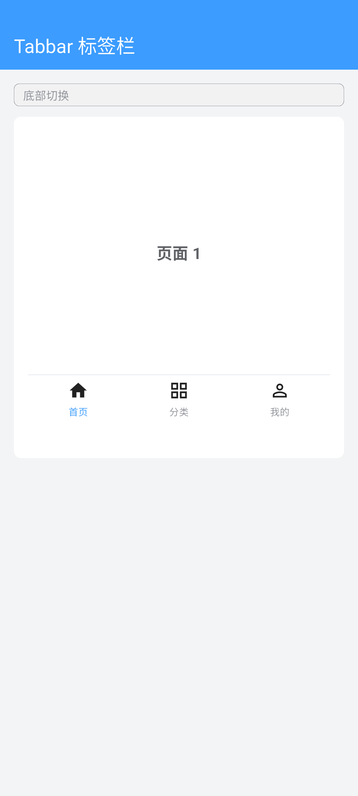
用法示例（点击展开）
class TabbarDemo extends StatefulWidget {
const TabbarDemo({Key? key}) : super(key: key);
@override
_TabbarDemoState createState() => _TabbarDemoState();
}
class _TabbarDemoState extends State<TabbarDemo> {
int _i = 0;
@override
Widget build(BuildContext context) => Container(
height: 360,
child: Column(
children: [
Expanded(
child: Center(
child: UText('页面 ${_i + 1}', size: 18, bold: true),
),
),
UTabbar(
currentIndex: _i,
onTap: (v) => setState(() => _i = v),
items: const [
UTabbarItem(icon: Icon(Icons.home_outlined), activeIcon: Icon(Icons.home), label: '首页'),
UTabbarItem(icon: Icon(Icons.grid_view_outlined), activeIcon: Icon(Icons.grid_view), label: '分类'),
UTabbarItem(icon: Icon(Icons.person_outline), activeIcon: Icon(Icons.person), label: '我的'),
],
),
],
),
);
}Tabs 标签页
说明：顶部标签页
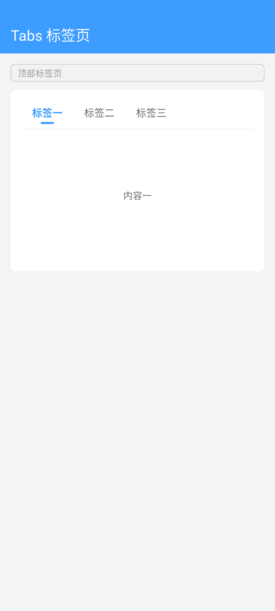
交互效果：
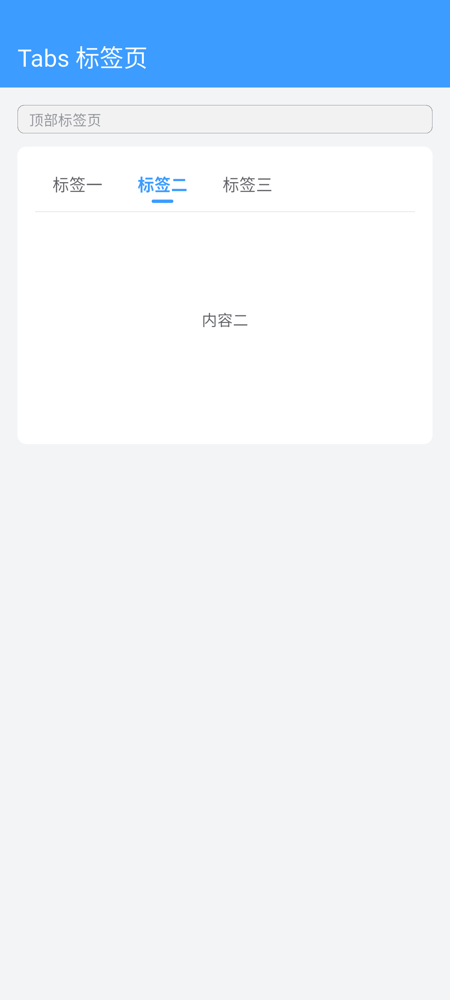
用法示例（点击展开）
class TabsDemo extends StatelessWidget {
const TabsDemo({Key? key}) : super(key: key);
@override
Widget build(BuildContext context) => Container(
height: 240,
child: UTabs(
tabs: const ['标签一', '标签二', '标签三'],
children: const [
Center(child: UText('内容一')),
Center(child: UText('内容二')),
Center(child: UText('内容三')),
],
),
);
}Steps 步骤条
说明：横向步骤
用法示例（点击展开）
class StepsDemo extends StatelessWidget {
const StepsDemo({Key? key}) : super(key: key);
@override
Widget build(BuildContext context) =>
const USteps(steps: ['填写', '审核', '完成'], current: 1);
}Dropdown 下拉菜单
说明：浮层选项
交互效果：
用法示例（点击展开）
class DropdownDemo extends StatefulWidget {
const DropdownDemo({Key? key}) : super(key: key);
@override
_DropdownDemoState createState() => _DropdownDemoState();
}
class _DropdownDemoState extends State<DropdownDemo> {
int? _v;
@override
Widget build(BuildContext context) => Container(
height: 240,
child: Column(
children: [
UDropdown(
options: const ['全部', '进行中', '已完成', '已取消'],
value: _v,
onChanged: (i) => setState(() => _v = i),
),
const Expanded(
child: Center(child: UText('下方内容可被浮层覆盖')),
),
],
),
);
}BackTop 返回顶部
说明：滚动吸顶按钮
用法示例（点击展开）
class BackTopDemo extends StatefulWidget {
const BackTopDemo({Key? key}) : super(key: key);
@override
_BackTopDemoState createState() => _BackTopDemoState();
}
class _BackTopDemoState extends State<BackTopDemo> {
final ScrollController _c = ScrollController();
@override
void dispose() {
_c.dispose();
super.dispose();
}
@override
Widget build(BuildContext context) => Container(
height: 320,
child: Stack(
children: [
Positioned.fill(
child: ListView(
controller: _c,
padding: const EdgeInsets.all(12),
children: List.generate(
30,
(i) => Container(
margin: const EdgeInsets.only(bottom: 8),
padding: const EdgeInsets.all(12),
decoration: BoxDecoration(
color: UView.of(context).surfaceColor,
borderRadius: BorderRadius.circular(8),
),
child: UText('列表项 $i'),
),
),
),
),
Positioned(bottom: 16, right: 16, child: UBackTop(controller: _c)),
],
),
);
}布局组件
Grid 宫格
说明：多列图标网格
用法示例（点击展开）
class GridDemo extends StatelessWidget {
const GridDemo({Key? key}) : super(key: key);
Widget _tile(Color c) => Container(
width: 28,
height: 28,
decoration: BoxDecoration(color: c, borderRadius: BorderRadius.circular(8)),
);
@override
Widget build(BuildContext context) => UGrid(
crossAxisCount: 4,
items: [
UGridItem(icon: _tile(Colors.blue), label: '功能一'),
UGridItem(icon: _tile(Colors.green), label: '功能二'),
UGridItem(icon: _tile(Colors.orange), label: '功能三'),
UGridItem(icon: _tile(Colors.purple), label: '功能四'),
UGridItem(icon: _tile(Colors.teal), label: '功能五'),
UGridItem(icon: _tile(Colors.pink), label: '功能六'),
UGridItem(icon: _tile(Colors.indigo), label: '功能七'),
UGridItem(icon: _tile(Colors.amber), label: '功能八'),
],
);
}Swiper 轮播
说明：自动轮播 + 指示点
用法示例（点击展开）
class SwiperDemo extends StatelessWidget {
const SwiperDemo({Key? key}) : super(key: key);
@override
Widget build(BuildContext context) => const USwiper(
height: 140,
autoplay: true,
children: [
ColoredBox(color: Colors.blue, child: Center(child: UText('幻灯片 1', color: Colors.white))),
ColoredBox(color: Colors.green, child: Center(child: UText('幻灯片 2', color: Colors.white))),
ColoredBox(color: Colors.orange, child: Center(child: UText('幻灯片 3', color: Colors.white))),
],
);
}Avatar 头像
说明：圆形/方形
用法示例（点击展开）
class AvatarDemo extends StatelessWidget {
const AvatarDemo({Key? key}) : super(key: key);
@override
Widget build(BuildContext context) => const URow(
gap: 16,
children: [
UAvatar(child: UText('U', bold: true), size: 40),
UAvatar(child: UText('W', bold: true), size: 56, backgroundColor: Color(0xFFE6F0FF)),
UAvatar(shape: UViewShape.square, radius: 12, child: UText('S', bold: true), size: 48),
],
);
}Empty 空状态
说明：空数据占位
用法示例（点击展开）
class EmptyDemo extends StatelessWidget {
const EmptyDemo({Key? key}) : super(key: key);
@override
Widget build(BuildContext context) => Container(
height: 160,
child: UEmpty(
text: '暂无数据',
action: UButton(text: '刷新', onPressed: () {}),
),
);
}Skeleton 骨架屏
说明：加载占位动画
用法示例（点击展开）
class SkeletonDemo extends StatelessWidget {
const SkeletonDemo({Key? key}) : super(key: key);
@override
Widget build(BuildContext context) => const UCol(
gap: 12,
crossAxisAlignment: CrossAxisAlignment.start,
children: [
USkeleton(width: 200),
USkeleton(width: 160, height: 12),
USkeleton(width: 48, height: 48, shape: UViewShape.circle),
],
);
}Sticky 吸顶
说明：滚动吸顶
用法示例（点击展开）
class StickyDemo extends StatelessWidget {
const StickyDemo({Key? key}) : super(key: key);
@override
Widget build(BuildContext context) => Container(
height: 320,
child: USticky(
header: Container(
color: UView.of(context).surfaceColor,
padding: const EdgeInsets.symmetric(horizontal: 16, vertical: 14),
child: const UText('吸顶标题', bold: true, size: 16),
),
body: List.generate(
20,
(i) => Container(
padding: const EdgeInsets.all(14),
decoration: BoxDecoration(
border: Border(
bottom: BorderSide(color: UView.of(context).borderColor),
),
),
child: UText('内容行 $i'),
),
),
),
);
}Waterfall 瀑布流
说明：多列不等高
用法示例（点击展开）
class WaterfallDemo extends StatelessWidget {
const WaterfallDemo({Key? key}) : super(key: key);
static final List<double> _heights = [80, 120, 100, 140, 90, 110, 130, 70, 100, 150, 95, 120];
@override
Widget build(BuildContext context) => Container(
height: 360,
child: SingleChildScrollView(
child: UWaterfall(
columnCount: 2,
spacing: 8,
children: List.generate(_heights.length, (i) {
return Container(
height: _heights[i],
decoration: BoxDecoration(
color: Colors.primaries[i % Colors.primaries.length].withOpacity(0.25),
borderRadius: BorderRadius.circular(8),
),
child: Center(child: UText('卡片 $i')),
);
}),
),
),
);
}数据/其他
Progress 进度条
说明：百分比/主题色
用法示例（点击展开）
class ProgressDemo extends StatelessWidget {
const ProgressDemo({Key? key}) : super(key: key);
@override
Widget build(BuildContext context) => const UCol(
gap: 12,
crossAxisAlignment: CrossAxisAlignment.start,
children: [
UProgress(percent: 0.3, showText: true),
UProgress(percent: 0.6, type: UViewType.success, showText: true),
UProgress(percent: 0.85, type: UViewType.warning, showText: true),
UProgress(percent: 1.0, type: UViewType.error),
],
);
}CountDown 倒计时
说明：天时分秒
用法示例（点击展开）
class CountDownDemo extends StatelessWidget {
const CountDownDemo({Key? key}) : super(key: key);
@override
Widget build(BuildContext context) => const URow(
gap: 12,
children: [
UCountDown(duration: Duration(minutes: 1), textSize: 18),
UCountDown(duration: Duration(hours: 2), textSize: 18),
],
);
}CountTo 数字滚动
说明：动画计数
用法示例（点击展开）
class CountToDemo extends StatelessWidget {
const CountToDemo({Key? key}) : super(key: key);
@override
Widget build(BuildContext context) => const URow(
gap: 16,
children: [
UCountTo(end: 12345, suffix: ' 次', type: UViewType.primary),
UCountTo(end: 99.9, decimals: 1, prefix: '¥', type: UViewType.error),
],
);
}Card 卡片
说明：标题/内容容器
用法示例（点击展开）
class CardDemo extends StatelessWidget {
const CardDemo({Key? key}) : super(key: key);
@override
Widget build(BuildContext context) => const UCard(
title: UText('卡片标题', bold: true),
extra: UText('更多', type: UViewType.info, size: 13),
child: UText('这是卡片的内容区域，用于承载正文信息。'),
);
}LoadMore 加载更多
说明：加载状态
用法示例（点击展开）
class LoadMoreDemo extends StatelessWidget {
const LoadMoreDemo({Key? key}) : super(key: key);
@override
Widget build(BuildContext context) => const ULoadMore(status: ULoadMoreStatus.normal);
}其他组件
FloatingBall 悬浮球
说明：可拖拽 / 展开菜单

交互效果：
用法示例（点击展开）
class FloatingBallDemo extends StatelessWidget {
const FloatingBallDemo({Key? key}) : super(key: key);
@override
Widget build(BuildContext context) => Container(
height: 360,
decoration: BoxDecoration(
color: UView.of(context).backgroundColor,
borderRadius: BorderRadius.circular(8),
),
child: UFloatingBall(
actions: const [
UFloatingAction(child: Icon(Icons.edit, color: Colors.white), label: '编辑'),
UFloatingAction(child: Icon(Icons.share, color: Colors.white), label: '分享'),
UFloatingAction(child: Icon(Icons.add, color: Colors.white), label: '新建'),
],
),
);
}